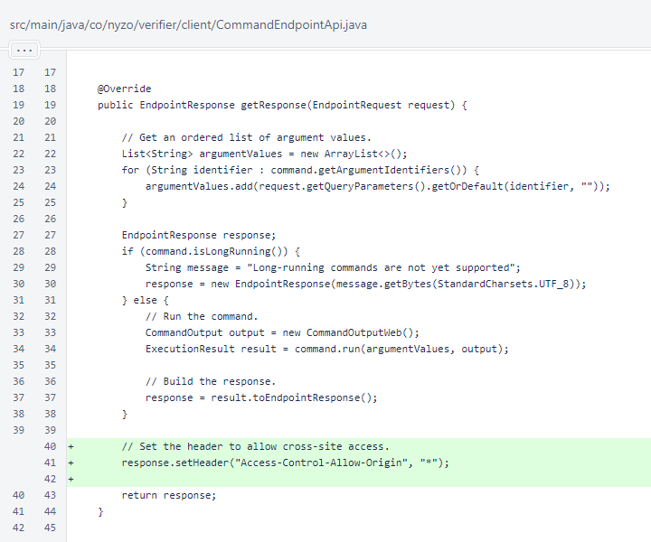

Nyzo version 583 (commit on GitHub) adds the Access-Control-Allow-Origin=* header to the client API endpoints to allow cross-origin access.
This version affects the API endpoints on the client only.
This version is due to a suggestion by a community member who opened an issue on GitHub. We appreciate the suggestion, and we consider our failure to implement this to be a mistake that detracted from the intended functionality of the API endpoints on the client.
In CommandEndpointApi.getResponse(), the Access-Control-Allow-Origin header is now set with a value of *.
If you are disappointed by the brevity of these release notes, we invite you to revisit the release notes for version 476.